Photo credits
Photos come from Wikimedia Commons under free licences. Guide cards use files vendored from the Earwise media library. Older homepage photos are listed first.
Country covers on the Audio guides page: Portugal by Thomas Dahlstrøm Nielsen, CC BY-SA 4.0. Italy by Wilfredor, CC0. Spain by Alvesgaspar, CC BY-SA 4.0. France by Jorge Royan, CC BY-SA 3.0. Greece by Norbert Nagel, CC BY-SA 3.0. Turkey by Wolfgang Moroder, CC BY-SA 3.0. Croatia by kallerna, CC BY-SA 4.0. South Africa by South African Tourism, CC BY 2.0.
 | Exterior of Sultan Ahmed I Mosque in Istanbul, Turkey 002 by Moonik, CC BY-SA 3.0. Resized and compressed. |
 | Ortaköy Mosque from the Bosphorus - 20250825 by mike, CC BY-SA 4.0. Resized and compressed. |
 | Cape Town (ZA), Cape Point Nature Reserve, Old Cape Point Lighthouse -- 2024 -- 3373 by Dietmar Rabich, CC BY-SA 4.0. Resized and compressed. |
 | Anfiteatro Flavio - Colosseo - panoramio by patano, CC BY-SA 3.0. Resized and compressed. |
 | Park Güell - view of Sagrada Familia by Joe Mabel, CC BY-SA 4.0. Cropped to 3:2 and compressed for this site. |
 | Park Güell 02 by Bernard Gagnon, CC BY-SA 3.0. Cropped to 3:2 and compressed for this site. |
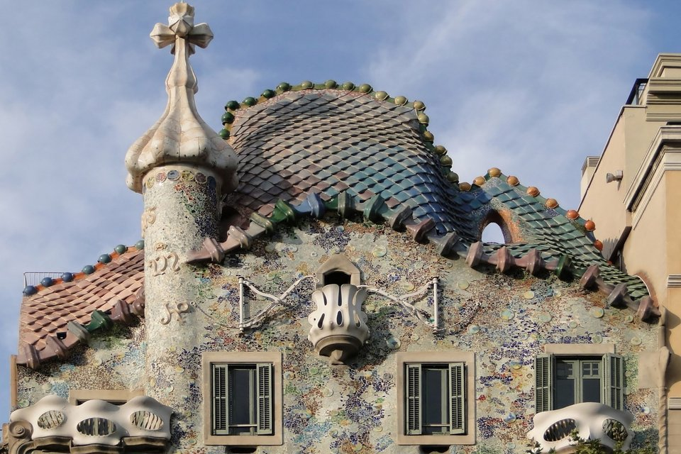 | Casa Batlló 01 by Bernard Gagnon, CC BY-SA 3.0. Cropped to 3:2 and compressed for this site. |
 | Casa Milà, general view by Thomas Ledl, CC BY-SA 4.0. Cropped to 3:2 and compressed for this site. |
 | 046 Catedral de Barcelona i torre romana de Ca l'Ardiaca, des de la plaça de la Catedral by Enric, CC BY-SA 4.0. Cropped to 3:2 and compressed for this site. |
 | La Rambla Barcelona 2004 by Djm1279 at English Wikipedia, Public domain. Cropped to 3:2 and compressed for this site. |
 | Camp Nou aerial by Oh-Barcelona.com from Barcelona, Spain, CC BY 2.0. Cropped to 3:2 and compressed for this site. |
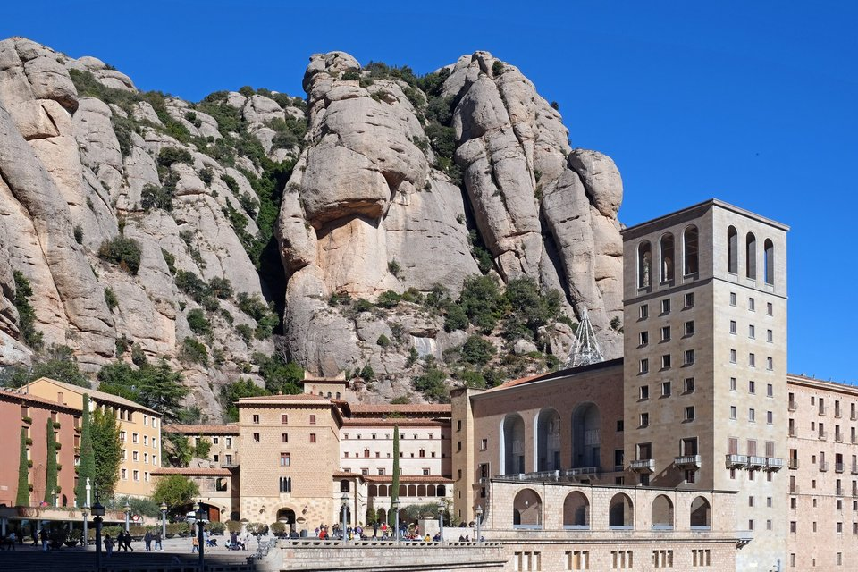 | Montserrat Natural Park 4 by kallerna, CC BY-SA 4.0. Cropped to 3:2 and compressed for this site. |
 | 117 Figueres, torre Galatea i cúpula del Museu Dalí by Enfo, CC BY-SA 3.0. Cropped to 3:2 and compressed for this site. |
 | Museo del Prado 2016 (25185969599) by Emilio J. Rodríguez Posada, CC BY-SA 2.0. Cropped to 3:2 and compressed for this site. |
 | Palacio Real de Madrid - 13 by Carlos Delgado, CC BY-SA 3.0. Cropped to 3:2 and compressed for this site. |
 | Sabatini Building, Museo Nacional Centro de Arte Reina Sofía 1 by Joseolgon, CC BY 4.0. Cropped to 3:2 and compressed for this site. |
 | Plaza Mayor de Madrid - 01 by Carlos Delgado, CC BY-SA 3.0. Cropped to 3:2 and compressed for this site. |
 | Santiagobernabeupanoramav45 by لا روسا, CC BY-SA 3.0. Cropped to 3:2 and compressed for this site. |
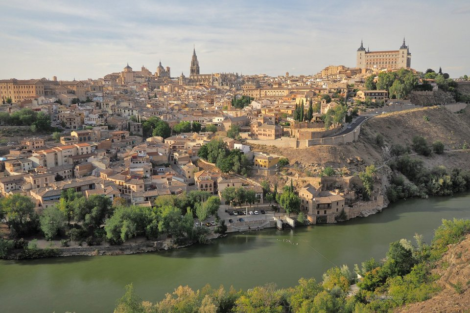 | Toledo (37737041515) by Dmitry Dzhus from London, CC BY 2.0. Cropped to 3:2 and compressed for this site. |
 | Aqueduct of Segovia 08 by Bernard Gagnon, CC BY-SA 3.0. Cropped to 3:2 and compressed for this site. |
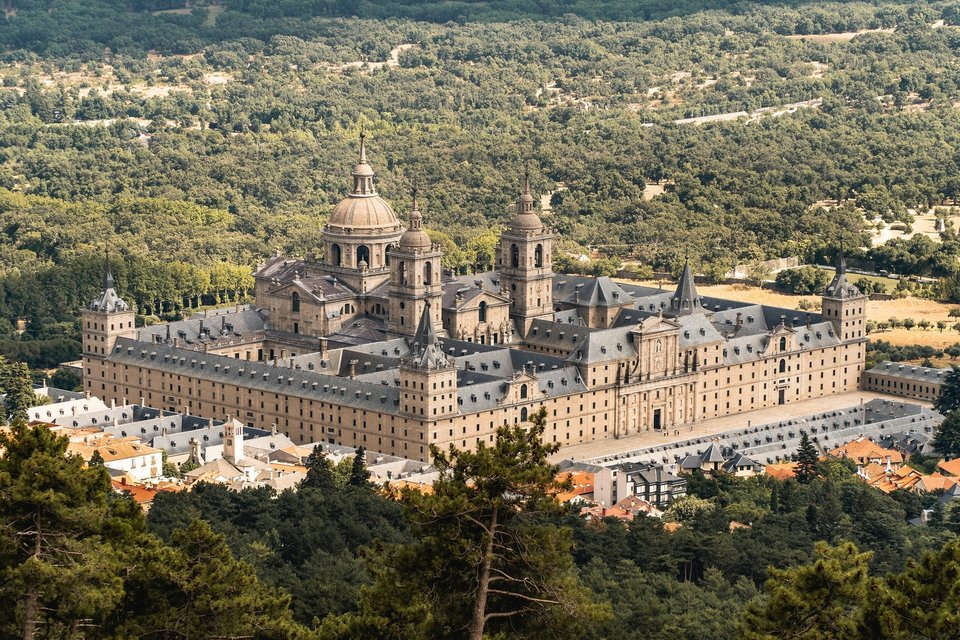 | Monasterio de El Escorial en Madrid by Zvonimir Stamenov, CC BY-SA 4.0. Cropped to 3:2 and compressed for this site. |
 | Murallas de Ávila - 07 by Carlos Delgado, CC BY-SA 3.0. Cropped to 3:2 and compressed for this site. |
 | Salamanca - BC 04 by Selbymay, CC BY-SA 3.0 es. Cropped to 3:2 and compressed for this site. |
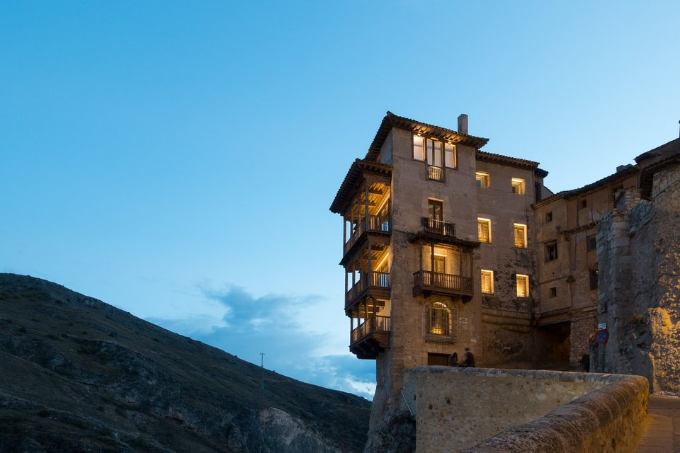 | Casas colgantes de Cuenca iluminadas 01 by Edmundo Sáez, CC BY-SA 4.0. Cropped to 3:2 and compressed for this site. |
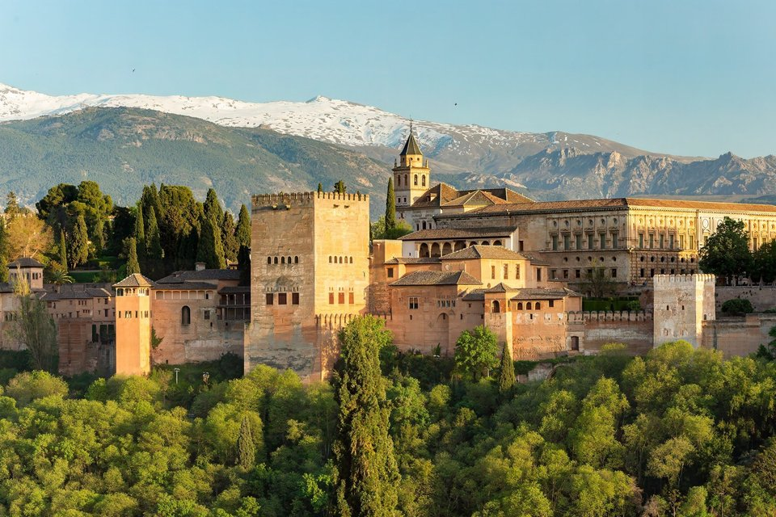 | Granada - View from Mirador de San Nicolás - 02 by Diego Delso, CC BY-SA 4.0. Cropped to 3:2 and compressed for this site. |
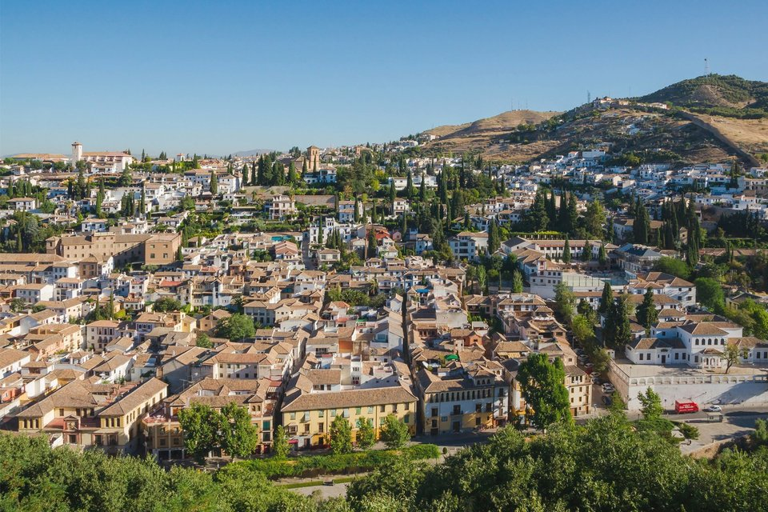 | Albaicin 2012 San Nicolas Sacromonte by Jebulon, CC0. Cropped to 3:2 and compressed for this site. |
 | Patio de las doncellas-ret by Cat from Sevilla, Spain, CC BY 2.0. Cropped to 3:2 and compressed for this site. |
 | Sevilla Cathedral - Southeast by Ingo Mehling, CC BY-SA 4.0. Cropped to 3:2 and compressed for this site. |
 | Plaza de España (Sevilla) - 01 by Carlos Delgado, CC BY-SA 4.0. Cropped to 3:2 and compressed for this site. |
 | Centro Histórico, 16.9 -- 2023 -- Córdoba, España by Jose María Ligero Loarte, CC BY-SA 4.0. Cropped to 3:2 and compressed for this site. |
 | Delimitación de Madinat al-Zahra 3 by Naza28, CC BY-SA 4.0. Cropped to 3:2 and compressed for this site. |
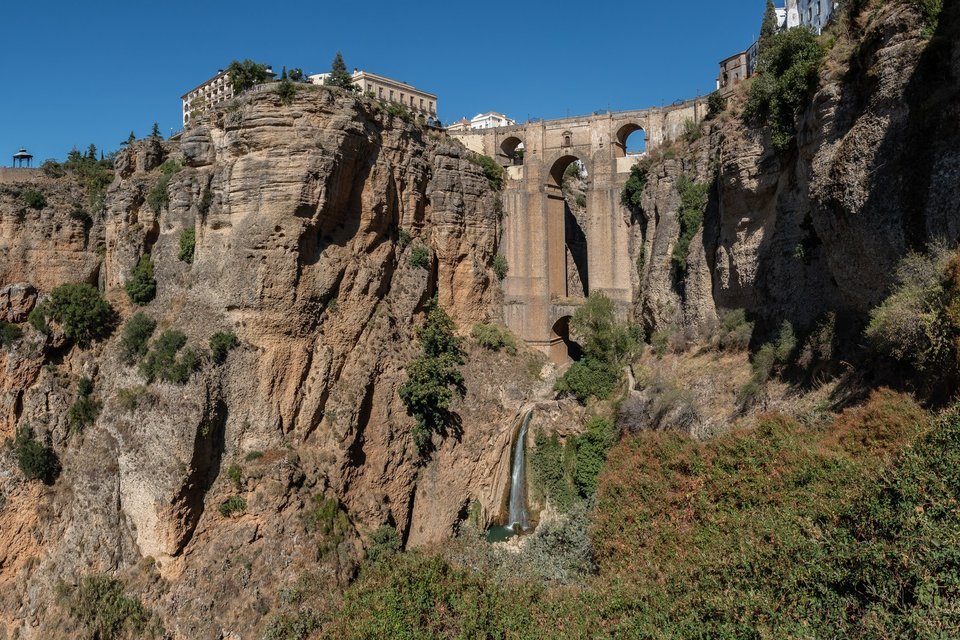 | Panorama of Ronda by Tesla Delacroix, CC BY-SA 4.0. Cropped to 3:2 and compressed for this site. |
 | Alcazaba, Malaga (DSC02867-Pano) by Matti Blume, CC BY-SA 4.0. Cropped to 3:2 and compressed for this site. |
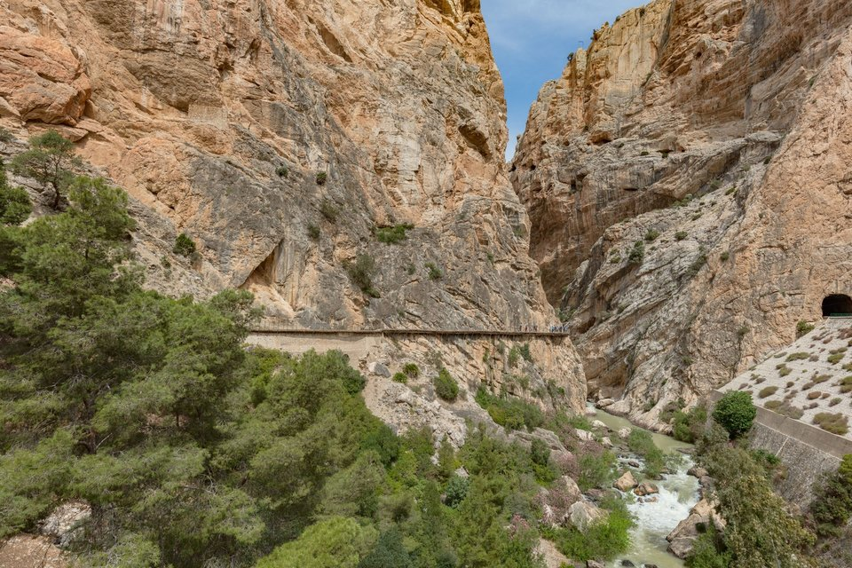 | Caminito del Rey, Málaga, España, 2023-05-18, DD 27 by Diego Delso, CC BY-SA 4.0. Cropped to 3:2 and compressed for this site. |
 | Santiago Compostela Cathedral 2023 - View from Alameda Park by Fernando Pascullo, CC BY-SA 4.0. Cropped to 3:2 and compressed for this site. |
 | Museo Guggenheim -- 2021 -- Bilbao, Euskadi, España by José Ligero Loarte, CC BY-SA 4.0. Cropped to 3:2 and compressed for this site. |
 | Catedral de Santa María de Burgos - 03 by Carlos Delgado, CC BY-SA 4.0. Cropped to 3:2 and compressed for this site. |
 | San Sebastian at night from Monte Urgull by Phillip Maiwald, CC BY-SA 3.0. Cropped to 3:2 and compressed for this site. |
 | Teatro romano de Mérida. España-2 by Lmbuga (Luis Miguel Bugallo Sánchez), CC BY-SA 4.0. Cropped to 3:2 and compressed for this site. |
 | Puerta de los Serranos, Valencia, España, 2014-06-30, DD 86 by Diego Delso, CC BY-SA 4.0. Cropped to 3:2 and compressed for this site. |
 | Hemispheric - Valencia, Spain - Jan 2007 by Diliff, CC BY 2.5. Cropped to 3:2 and compressed for this site. |
 | Kathedrale von Palma II by Thomas Wolf, www.foto-tw.de, CC BY-SA 3.0 de. Cropped to 3:2 and compressed for this site. |
 | Teide Canadas by Ingo Mehling, CC BY-SA 4.0. Cropped to 3:2 and compressed for this site. |
 | Colosseum in Rome-April 2007-1- copie 2B by Diliff, CC BY-SA 2.5. Cropped to 3:2 and compressed for this site. |
 | Pantheon in Rome (1) by Krzysztof Golik, CC BY-SA 4.0. Cropped to 3:2 and compressed for this site. |
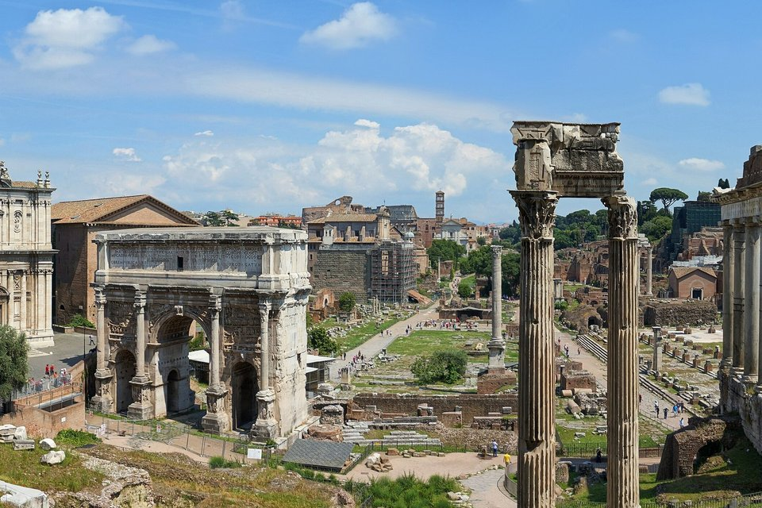 | Forum romanum 6k (5760x2097) by BeBo86, CC BY-SA 3.0. Cropped to 3:2 and compressed for this site. |
 | Fontaine Trevi - Rome by Wilfredor, CC0. Cropped to 3:2 and compressed for this site. |
 | Vatican Museums Spiral Staircase Looking Up 2012 by Colin, CC BY-SA 3.0. Cropped to 3:2 and compressed for this site. |
 | Vatican City (VA), Petersdom -- 2013 -- 4352 by Dietmar Rabich, CC BY-SA 4.0. Cropped to 3:2 and compressed for this site. |
 | RomaCastelSantAngelo by Andreas Tille, CC BY-SA 4.0. Cropped to 3:2 and compressed for this site. |
 | Galleria borghese facade by Alessio Damato, CC BY-SA 3.0. Cropped to 3:2 and compressed for this site. |
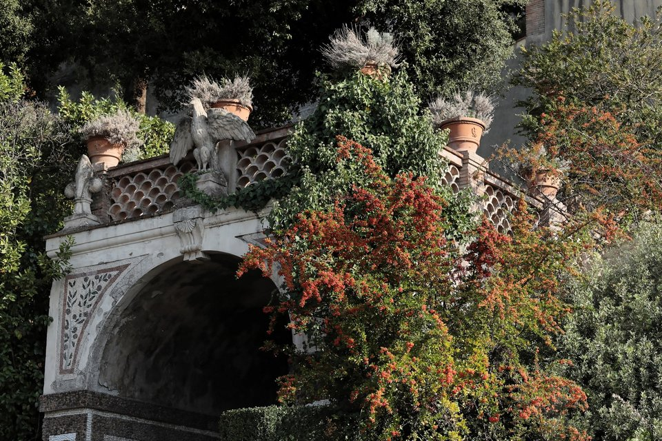 | Garten und Villa D´Este 16 by Burkhard Mücke, CC BY-SA 4.0. Cropped to 3:2 and compressed for this site. |
 | Duomo, Firenze by Clément Bardot, CC BY-SA 4.0. Cropped to 3:2 and compressed for this site. |
 | Panorama di Firenze centro visto dal Piazzale Michelangelo by PROPOLI87, CC BY-SA 4.0. Cropped to 3:2 and compressed for this site. |
 | Piazzale degli Uffizi perspective view, Florence, Italy, August 2025 by Verum3414, CC BY 4.0. Cropped to 3:2 and compressed for this site. |
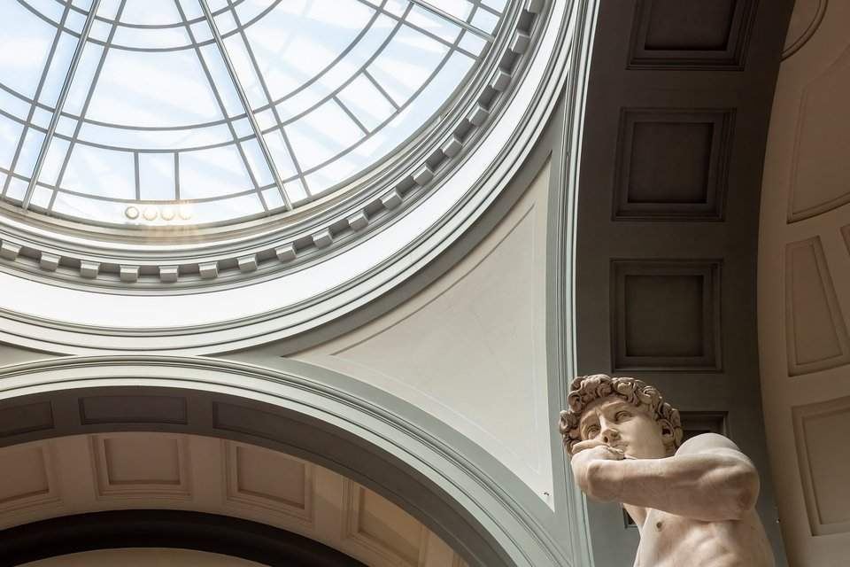 | David (61380h) by Rhododendrites, CC BY-SA 4.0. Cropped to 3:2 and compressed for this site. |
 | PiazzadelCampoSiena by Massimo Catarinella, CC BY-SA 3.0. Cropped to 3:2 and compressed for this site. |
 | Here it is, The Piazza dei Miracoli! Pisa, Italy by Ввласенко, CC BY-SA 3.0. Cropped to 3:2 and compressed for this site. |
 | Piazza San Marco from Giudecca Canal by kallerna, CC BY-SA 4.0. Cropped to 3:2 and compressed for this site. |
 | Saint Mark's Campanile and Palazzo Ducale, Venice, September 2017 -2 by Martin Falbisoner, CC BY-SA 4.0. Cropped to 3:2 and compressed for this site. |
 | Panorama of Canal Grande and Ponte di Rialto, Venice - September 2017 by Martin Falbisoner, CC BY-SA 4.0. Cropped to 3:2 and compressed for this site. |
 | Milan Duomo with tourists in Piazza by Daniel Case, CC BY-SA 3.0. Cropped to 3:2 and compressed for this site. |
 | Santa Maria delle Grazie Milan 2013 by Marcin Białek, CC BY-SA 3.0. Cropped to 3:2 and compressed for this site. |
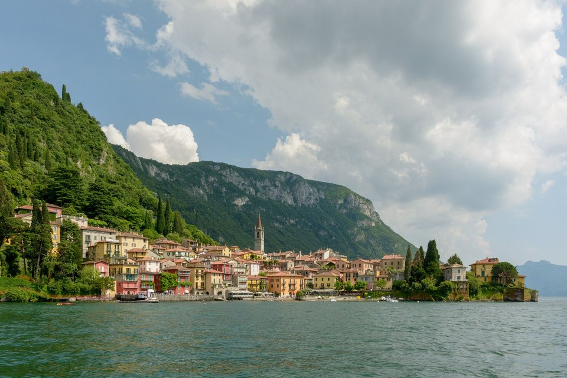 | Varenna 3792 by Henry Kellner, CC BY-SA 4.0. Cropped to 3:2 and compressed for this site. |
 | Vernazza harbour panorama, Cinque Terre, Liguria, Italy, April 2026 by Mathieu Chollet - MChollet, CC BY-SA 4.0. Cropped to 3:2 and compressed for this site. |
 | Museo Egizio e Galleria sabauda, Torino by Georgius LXXXIX at Italian Wikipedia, Public domain. Cropped to 3:2 and compressed for this site. |
 | Museo Nazionale Archeologico di Napoli by M.Pardy, CC BY 2.0. Cropped to 3:2 and compressed for this site. |
 | Antigua ciudad de Herculano, Italia, 2023-03-27, DD 141 by Diego Delso, CC BY-SA 4.0. Cropped to 3:2 and compressed for this site. |
 | Amalfi Coast - Flickr - concrete^fells (3) by concrete&fells, CC BY 2.0. Cropped to 3:2 and compressed for this site. |
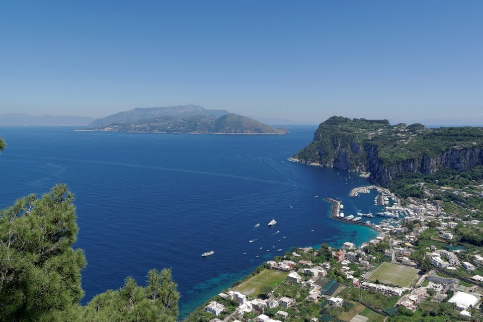 | Capri harbour from Anacapri 2013 by Berthold Werner, CC BY-SA 3.0. Cropped to 3:2 and compressed for this site. |
 | Taormina BW 2025-04-27 12-35-55 by Berthold Werner, CC BY-SA 4.0. Cropped to 3:2 and compressed for this site. |
 | Temple of Concordia, Agrigento BW 2012-10-07 13-09-13 by Berthold Werner, CC BY-SA 3.0. Cropped to 3:2 and compressed for this site. |


.jpg){kind=link}


.jpg){kind=link}


_-_01.jpg){kind=link}


.jpg){kind=link}


.jpg){kind=link}
.jpg){kind=link}


,_Petersdom_--_2013_--_4352.jpg){kind=link}


.jpg){kind=link}


.jpg){kind=link}


Guide photos
 | Pompeii, Triangular forum (48442310112) by Gary Todd from Xinzheng, China, Public domain. Cropped to 3:2 and compressed for this site. |
| Anfiteatro Flavio - Colosseo - panoramio by patano, CC BY-SA 3.0. Cropped to 3:2 and compressed for this site. |
 | Hagia Sophia Istanbul July 2022-2 by Alvesgaspar, CC BY-SA 4.0. Cropped to 3:2 and compressed for this site. |
 | Ephesus Celsus Library Façade by Benh LIEU SONG, CC BY-SA 3.0. Cropped to 3:2 and compressed for this site. |
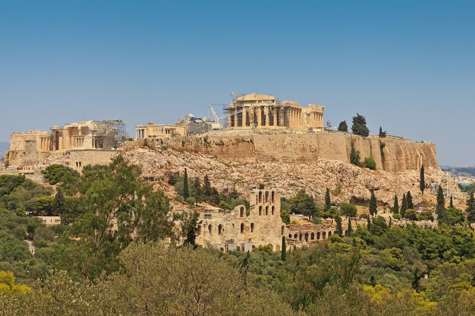 | The Parthenon in Athens by Steve Swayne, CC BY 2.0. Cropped to 3:2 and compressed for this site. |
 | Cortile della Pigna, Vatican Museums by Wilfredor, CC0. Cropped to 3:2 and compressed for this site. |
 | Cape Town - Table Mountain seen from cable car by Romaine, CC0. Cropped to 3:2 and compressed for this site. |
| Excavations Herculaneum by Jebulon, CC0. Cropped to 3:2 and compressed for this site. |
 | Roman Forum (Forum Romanum) by Gary Todd from Xinzheng, China, Public domain. Cropped to 3:2 and compressed for this site. |
| Duomo Florence facade by Macieklew, CC BY-SA 4.0. Cropped to 3:2 and compressed for this site. |
| La Galleria degli Uffizi vista da Palazzo Vecchio, Firenze (2) by Stefano Travasci, CC BY 4.0. Cropped to 3:2 and compressed for this site. |
 | (Venice) Rialto stop on Canal Grande by Didier Descouens, CC BY-SA 4.0. Cropped to 3:2 and compressed for this site. |
 | Positano, Amalfi Coast, Italy (21689385354) by VV Nincic from Toronto, Canada, CC BY 2.0. Cropped to 3:2 and compressed for this site. |
 | Exterior of Sultan Ahmed I Mosque in Istanbul, Turkey 002 by Moonik, CC BY-SA 3.0. Cropped to 3:2 and compressed for this site. |
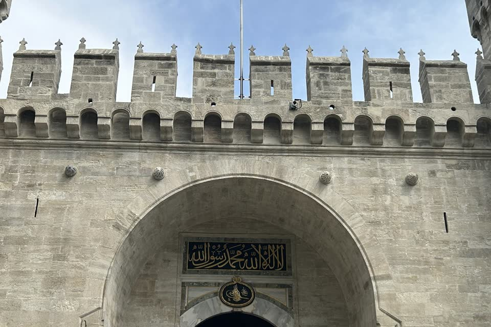 | Gate of Salutation (Topkapı Palace) (2024) by Premeditated, CC BY-SA 4.0. Cropped to 3:2 and compressed for this site. |
 | Entrance of Grand Bazaar, Istanbul, Turkey (Ank Kumar) 03 by Ank Kumar, CC BY-SA 4.0. Cropped to 3:2 and compressed for this site. |
 | Galata Kulesi (38800) by Tayeçe2024, CC BY-SA 3.0. Cropped to 3:2 and compressed for this site. |
 | Istanbul Cistern Medusa (03) by Zorka Sojka, CC BY 4.0. Cropped to 3:2 and compressed for this site. |
 | Cappadocia Goreme hike red valley fairy chimneys caves2 by Aquinoxmedia, CC BY-SA 4.0. Cropped to 3:2 and compressed for this site. |
 | Travertine terraces - Pamukkale, Denizli Province, Turkey by Giorgio Galeotti, CC BY-SA 4.0. Cropped to 3:2 and compressed for this site. |
 | View from Miradouro de Santa Luzia, Lisbon, 20250603 2016 9045 by Jakub Hałun, CC BY 4.0. Cropped to 3:2 and compressed for this site. |
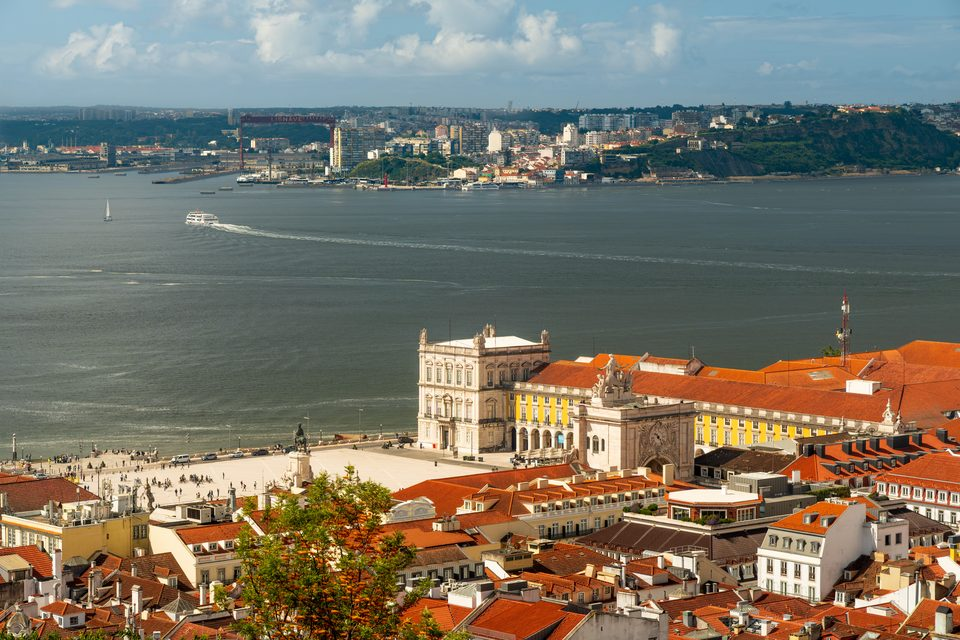 | Praca do Comercio - Lisbon - Portugal by NorbertNagel, CC BY-SA 4.0. Cropped to 3:2 and compressed for this site. |
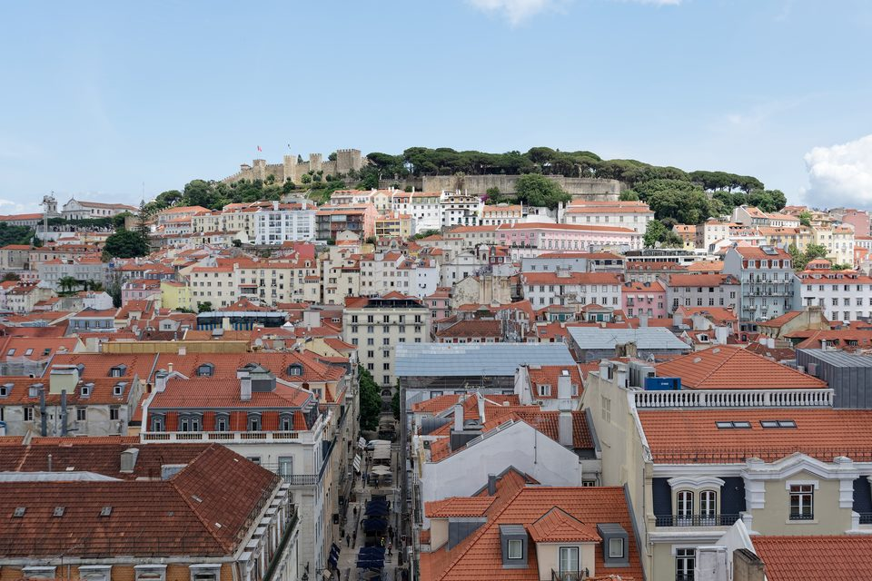 | View of Castelo de São Jorge from Elevador de Santa Justa, Lisbon, 20250604 1532 9303 by Jakub Hałun, CC BY 4.0. Cropped to 3:2 and compressed for this site. |
 | Torre de Belém and wooden bridge - landscape view - Lisbon - 2026-05-14 by Norbert Nagel, CC BY-SA 4.0. Cropped to 3:2 and compressed for this site. |
 | Lisboa, Mosteiro dos Jerónimos (29) by Dennis G. Jarvis, CC BY-SA 2.0. Cropped to 3:2 and compressed for this site. |
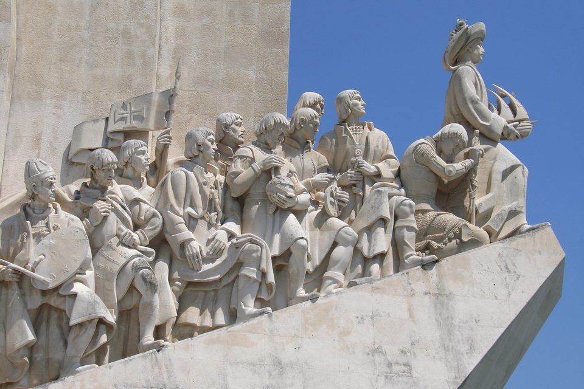 | Padrão dos Descobrimentos2 by Plenumchamber, CC BY 3.0. Cropped to 3:2 and compressed for this site. |
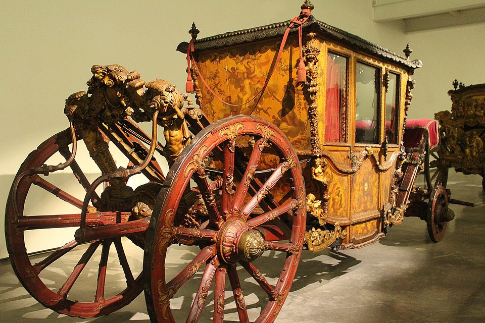 | Lisbon, Museu Nacional dos Coches, coach of ?-1 by Dguendel, CC BY 4.0. Cropped to 3:2 and compressed for this site. |
 | Museu Calouste Gulbenkian (Main Entrance) by Fundação Calouste Gulbenkian, CC BY-SA 4.0. Cropped to 3:2 and compressed for this site. |
 | Sintra Portugal Palácio da Pena-01 by CEphoto, Uwe Aranas, CC BY-SA 3.0. Cropped to 3:2 and compressed for this site. |
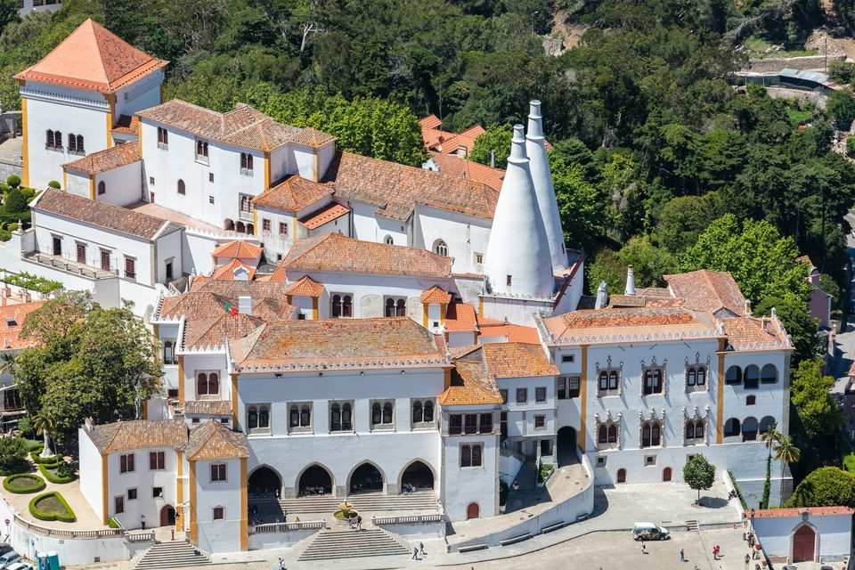 | Palacio Nacional, Sintra, Portugal, 2019-05-25, DD 89 by Diego Delso, CC BY-SA 4.0. Cropped to 3:2 and compressed for this site. |
 | Castelo dos Mouros, Sintra, 20250606 1155 0098 by Jakub Hałun, CC BY 4.0. Cropped to 3:2 and compressed for this site. |
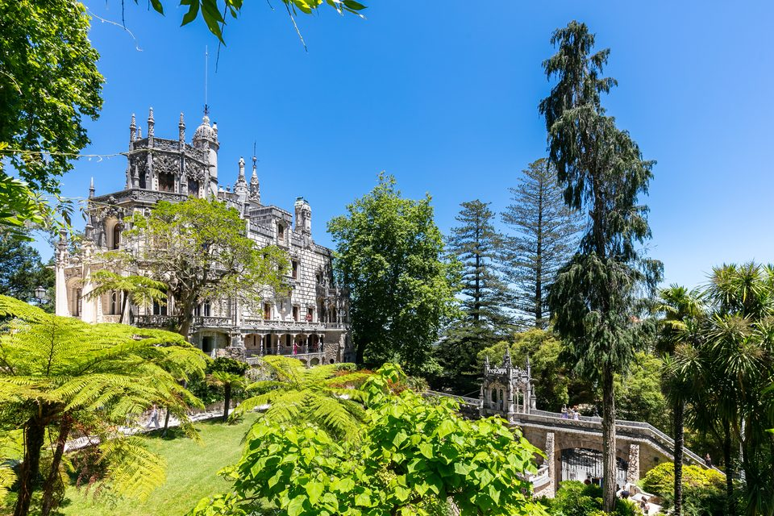 | Quinta da Regaleira, Sintra, Portugal, 2019-05-25, DD 56 by Diego Delso, CC BY-SA 4.0. Cropped to 3:2 and compressed for this site. |
 | Ribeira from Dom Luis I bridge (1) by Krzysztof Golik, CC BY-SA 4.0. Cropped to 3:2 and compressed for this site. |
 | Porto April 2019-1 by Alvesgaspar, CC BY-SA 4.0. Cropped to 3:2 and compressed for this site. |
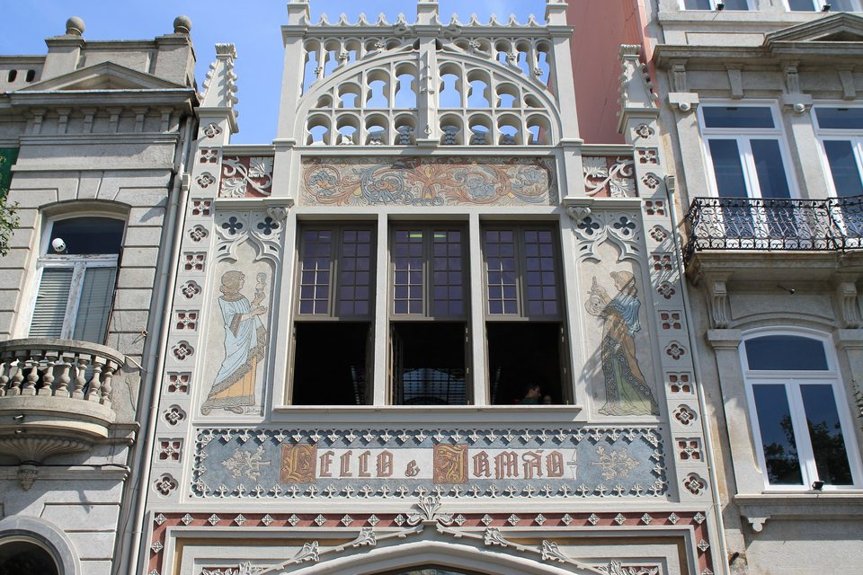 | Exterior view of Livraria Lello 02 by John Samuel, CC BY-SA 4.0. Cropped to 3:2 and compressed for this site. |
 | Palacio da Bolsa in Porto (2) by Krzysztof Golik, CC BY-SA 4.0. Cropped to 3:2 and compressed for this site. |
 | Vila Nova de Gaia Mosteiro da Serra do Pilar (53093438384) by tomislav medak, CC BY-SA 2.0. Cropped to 3:2 and compressed for this site. |
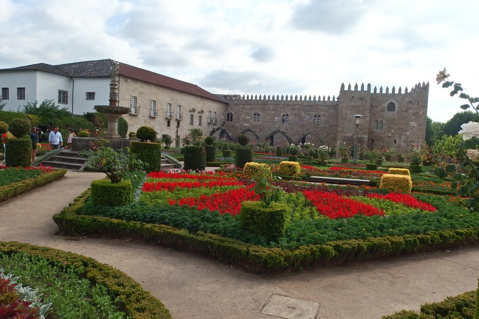 | Braga, Jardim de Santa Barbara (1) by Palickap, CC BY-SA 4.0. Cropped to 3:2 and compressed for this site. |
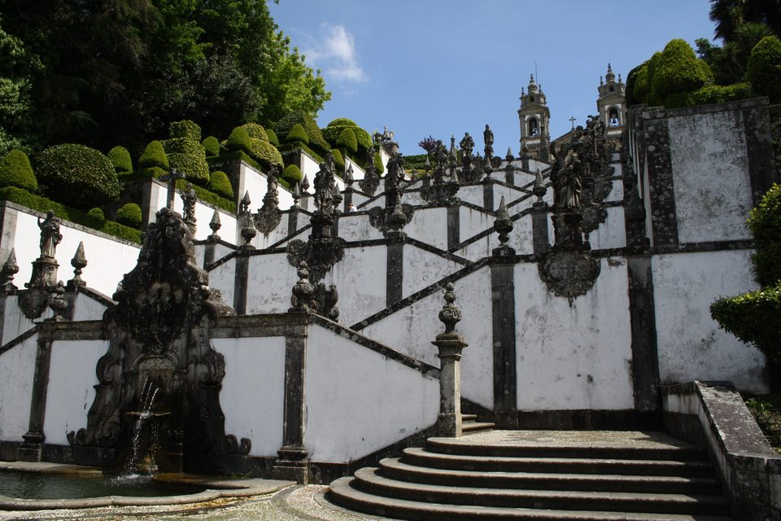 | Baroque stairway of Bom Jesus do Monte - panoramio by Scott Crowe, CC BY-SA 3.0. Cropped to 3:2 and compressed for this site. |
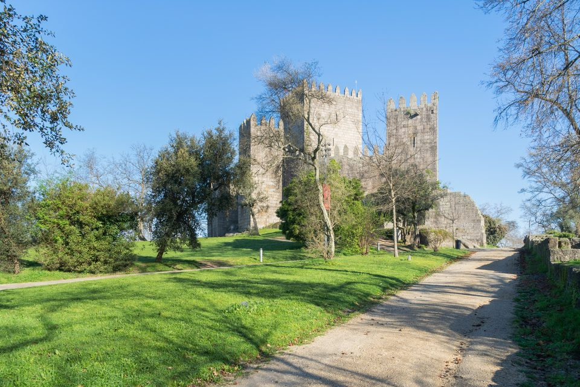 | Castelo de Guimaraes (1) by Krzysztof Golik, CC BY-SA 4.0. Cropped to 3:2 and compressed for this site. |
 | Guimarães, Largo da Oliveira (5) by Palickap, CC BY-SA 4.0. Cropped to 3:2 and compressed for this site. |
 | Portugal Vallée du Douro (8121915978) by peuplier from Switzerland Suisse romande, CC BY 2.0. Cropped to 3:2 and compressed for this site. |
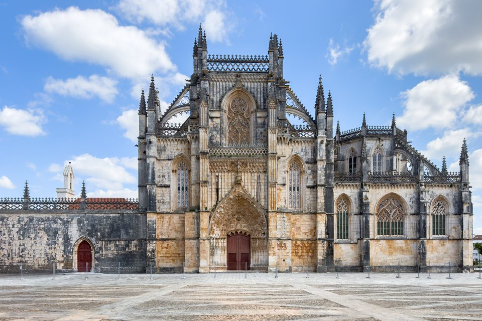 | Main facade of Mosteiro da Batalha 078 by Kent Wang, CC BY 4.0. Cropped to 3:2 and compressed for this site. |
 | Mafra May 2013-2 by Alvesgaspar, CC BY-SA 3.0. Cropped to 3:2 and compressed for this site. |
 | Paços da Universidade ou Paços das Escolas - Bibliotena Joanina, Capela São Miguel, Torre e Via Latina by Duca696, CC BY-SA 3.0. Cropped to 3:2 and compressed for this site. |
 | Convento de Cristo - Church from Garden by Ingo Mehling, CC BY-SA 4.0. Cropped to 3:2 and compressed for this site. |